材料 5個分
※粉量を変えると自動計算されます
生地
アーモンドクリーム
型
作り方
生地
STEP 1
ホームベーカリーで生地を作る
ホームベーカリーに材料をセットして「生地コース」を選べば、生地作りから一次発酵までお任せできます。コースが終わったら、次の作業に進みます。
ホームベーカリーに材料をセットして「生地コース」を選べば、生地作りから一次発酵までお任せできます。コースが終わったら、次の作業に進みます。
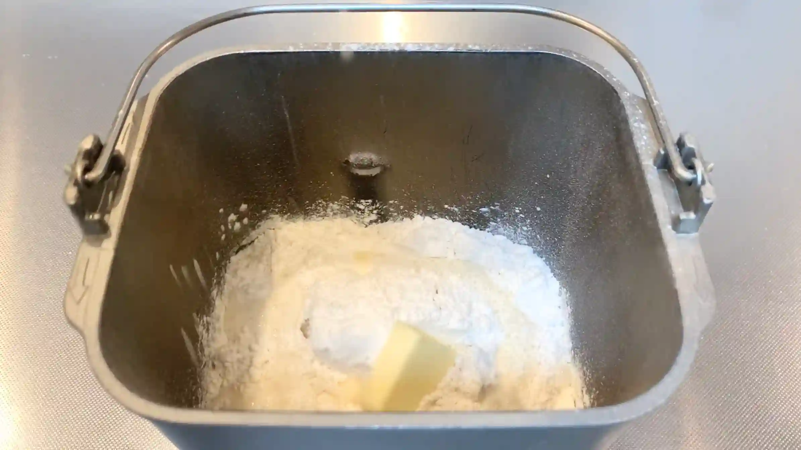
STEP 2
STEP 3
生地を取り出し20cm×45cmに伸ばす
めん棒で生地の中央から外側へ少しずつ伸ばし、20×45cmを目安に長方形に整えます。生地が縮んで伸ばしにくいときは、無理に引っ張らず少し休ませると生地がゆるみ、きれいに伸ばしやすくなります。
めん棒で生地の中央から外側へ少しずつ伸ばし、20×45cmを目安に長方形に整えます。生地が縮んで伸ばしにくいときは、無理に引っ張らず少し休ませると生地がゆるみ、きれいに伸ばしやすくなります。
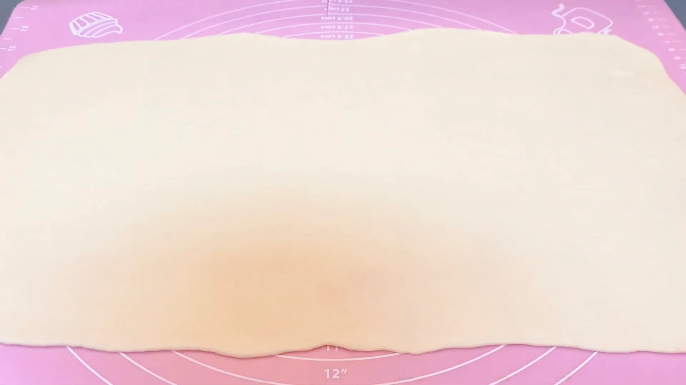
STEP 4
生地全体にフィリングを塗る
できるだけ均一な厚さになるように塗り広げます。フィリングが生地からはみ出してこないよう、端を少しだけ空けて塗ることで、三つ折りがしやすくなります。
できるだけ均一な厚さになるように塗り広げます。フィリングが生地からはみ出してこないよう、端を少しだけ空けて塗ることで、三つ折りがしやすくなります。
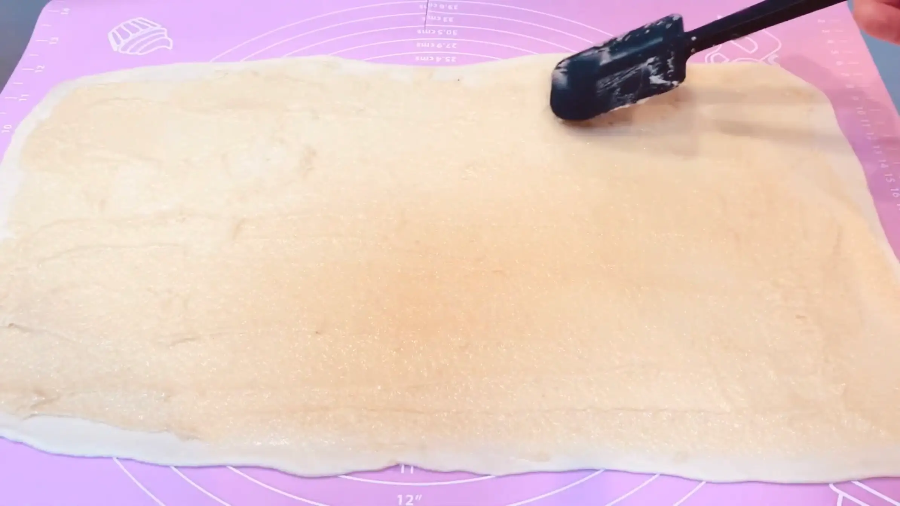
STEP 5
三つ折りする
折るときに強く押さえるとフィリングが外へ押し出されてしまうため、生地を持ち上げるようにしてやさしく折り重ねます。折り目をそろえておくと、この後のカットや成形もしやすくなります。
折るときに強く押さえるとフィリングが外へ押し出されてしまうため、生地を持ち上げるようにしてやさしく折り重ねます。折り目をそろえておくと、この後のカットや成形もしやすくなります。
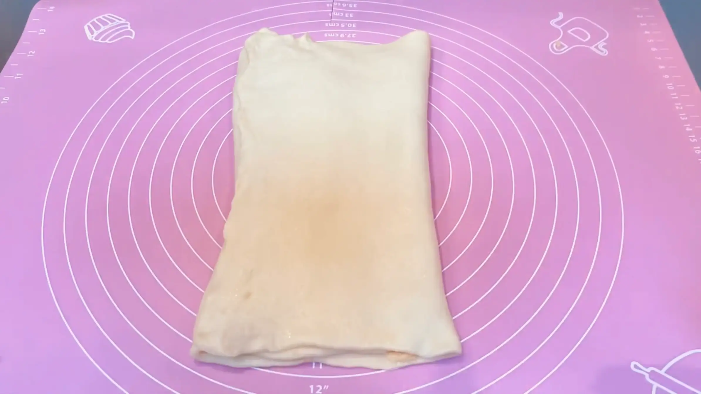
STEP 6
生地にラップをして、30分冷凍する
フィリングを挟んだ生地を冷やすことで、バターを含むフィリングが締まり、生地が扱いやすくなります。
フィリングを挟んだ生地を冷やすことで、バターを含むフィリングが締まり、生地が扱いやすくなります。
STEP 7
マフィン型にバターを塗る
薄くバターを塗り、生地が型にくっつくのを防ぎます。
薄くバターを塗り、生地が型にくっつくのを防ぎます。
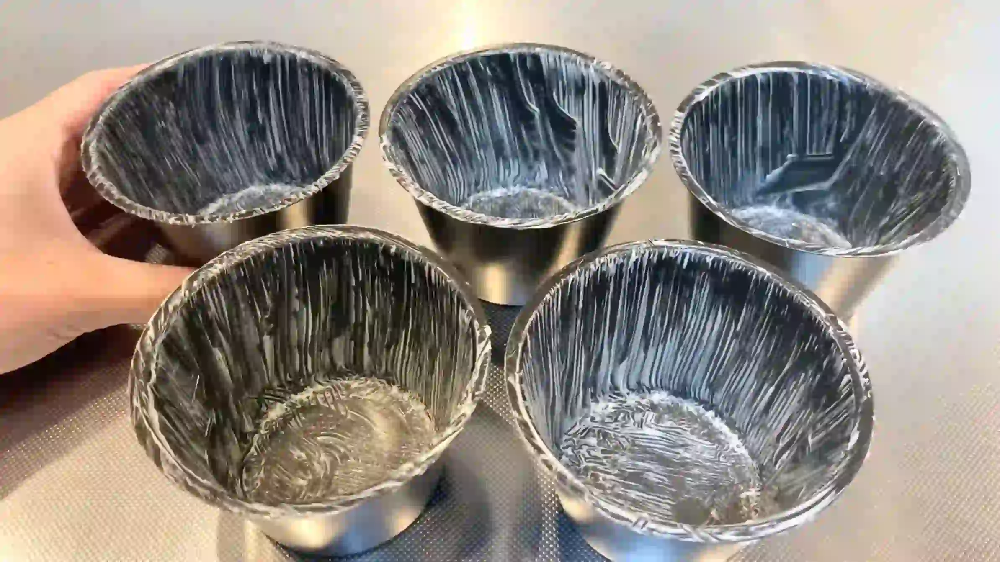
STEP 8
生地を縦長10本に切り分ける（[動画 04:00]）
冷やした生地を、長い方向に対して10本に切り分けます。できるだけ同じ幅に切ることで、1つずつのボリュームがそろい、焼き上がりも均一になります。
冷やした生地を、長い方向に対して10本に切り分けます。できるだけ同じ幅に切ることで、1つずつのボリュームがそろい、焼き上がりも均一になります。
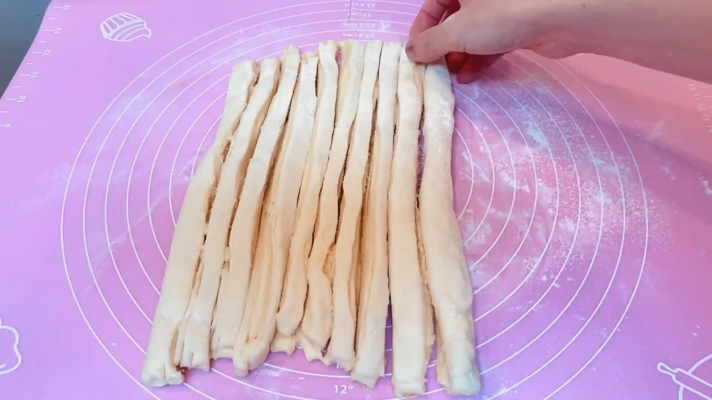
STEP 9
2本の生地を断面が表にくるように置き、上をくっつける（[動画 04:19]）
生地の断面を表に揃えることで、ねじったときにフィリングと生地の層が綺麗に現れ、焼き上がりが華やかになります。上端はしっかりつまんで、2本が離れないようにします。
生地の断面を表に揃えることで、ねじったときにフィリングと生地の層が綺麗に現れ、焼き上がりが華やかになります。上端はしっかりつまんで、2本が離れないようにします。
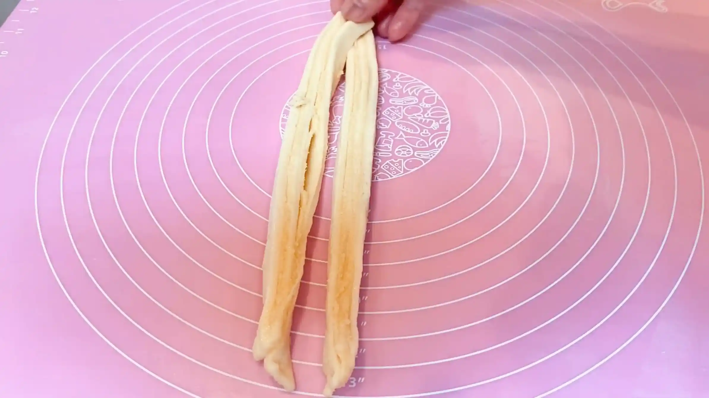
STEP 10
ねじって綱状に編む（[動画 04:26]）
2本の生地を交互にねじり、綱のような形にします。強く引っ張りながらねじると生地が細くなったり、フィリングが押し出されたりするため、生地の長さを無理に伸ばさないよう、自然にねじっていきます。ねじりすぎず、層がところどころ見えるくらいにすると、焼き上がりの表情がきれいに出ます。
2本の生地を交互にねじり、綱のような形にします。強く引っ張りながらねじると生地が細くなったり、フィリングが押し出されたりするため、生地の長さを無理に伸ばさないよう、自然にねじっていきます。ねじりすぎず、層がところどころ見えるくらいにすると、焼き上がりの表情がきれいに出ます。
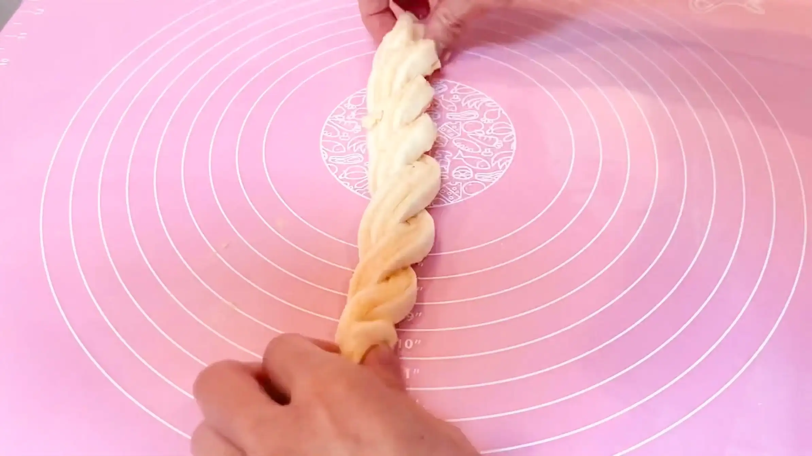
STEP 11
くるっと巻いて型に入れる（[動画 04:42]）
ねじった生地を中心から外側へ広がるように軽く巻き、マフィン型に入れます。巻き終わりは底側に入れておくと、焼いている間にほどけにくくなります。
ねじった生地を中心から外側へ広がるように軽く巻き、マフィン型に入れます。巻き終わりは底側に入れておくと、焼いている間にほどけにくくなります。
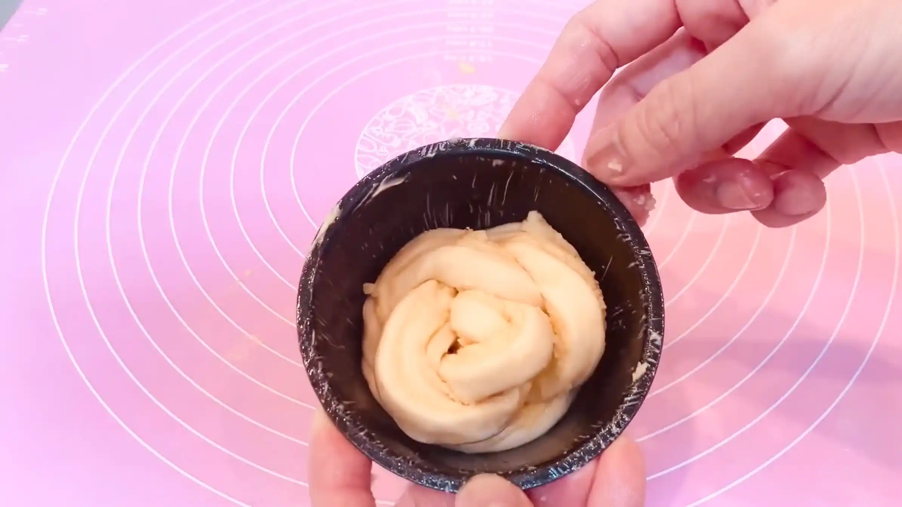
STEP 12
ラップをして、常温で50分おく（時間を見て、オーブンの予熱も開始する）
成形した生地を休ませ、二次発酵させます。生地がひと回り大きくなり、ふっくらとした状態を目安にします。発酵時間は室温や生地の温度によって変わるため、時間は目安とし、生地の膨らみ具合を確認してください。
成形した生地を休ませ、二次発酵させます。生地がひと回り大きくなり、ふっくらとした状態を目安にします。発酵時間は室温や生地の温度によって変わるため、時間は目安とし、生地の膨らみ具合を確認してください。
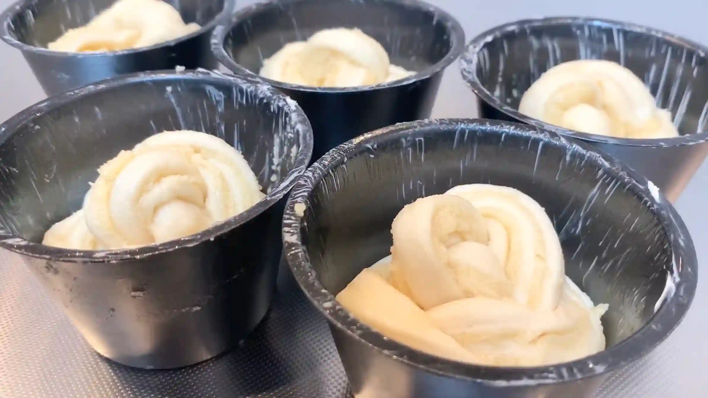
STEP 13
牛乳を塗り、お好みでアーモンドスライスのせる
焼成前に表面へ牛乳を薄く塗ることで、焼き色がつきやすくなり、表面を香ばしく仕上げることができます。アーモンドスライスをのせる場合は、軽く押さえて生地に密着させておくと、焼いている間に落ちにくくなります。
焼成前に表面へ牛乳を薄く塗ることで、焼き色がつきやすくなり、表面を香ばしく仕上げることができます。アーモンドスライスをのせる場合は、軽く押さえて生地に密着させておくと、焼いている間に落ちにくくなります。
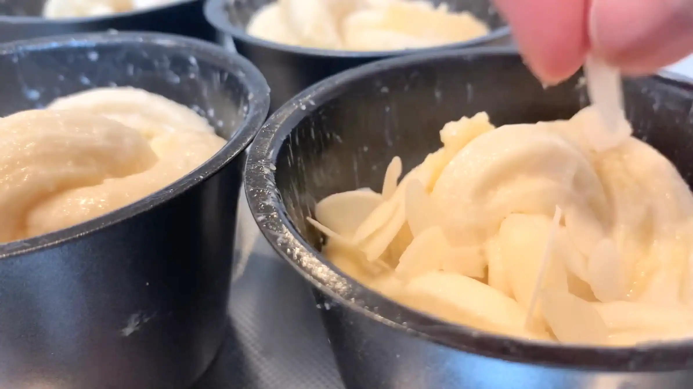
STEP 14
予熱したオーブン190℃で20分〜30分焼く
表面に香ばしい焼き色がつき、中までしっかり火が通れば焼き上がりです。焼き時間や温度は目安とし、ご家庭のオーブンによってご調整ください。（途中表面が焦げそうな場合は、アルミホイルを被せてください。）
表面に香ばしい焼き色がつき、中までしっかり火が通れば焼き上がりです。焼き時間や温度は目安とし、ご家庭のオーブンによってご調整ください。（途中表面が焦げそうな場合は、アルミホイルを被せてください。）
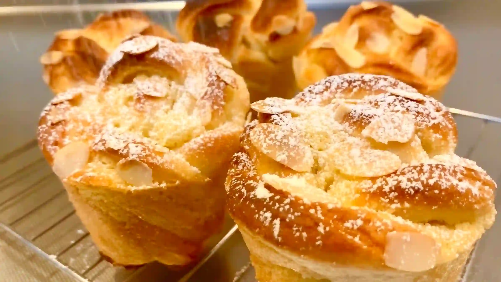
フィリング
STEP 1
バターをクリーム状にしてグラニュー糖を混ぜる
室温に戻したバター（もしくは少しレンチンしたバター）をやわらかく練り、グラニュー糖を加えてよく混ぜます。バターを先にクリーム状にしておくことで、砂糖がなじみやすくなり、なめらかなフィリングに仕上がります。
室温に戻したバター（もしくは少しレンチンしたバター）をやわらかく練り、グラニュー糖を加えてよく混ぜます。バターを先にクリーム状にしておくことで、砂糖がなじみやすくなり、なめらかなフィリングに仕上がります。
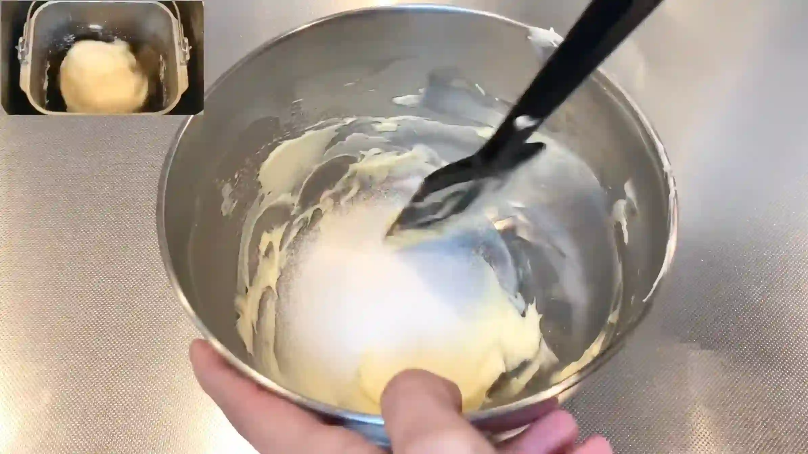
STEP 2
全卵を3回くらいにわけて混ぜる
卵は一度に加えず、3回ほどに分けて、その都度よく混ぜ合わせます。バターに卵を一度に加えると分離しやすいため、少しずつ加えのがポイントです。
卵は一度に加えず、3回ほどに分けて、その都度よく混ぜ合わせます。バターに卵を一度に加えると分離しやすいため、少しずつ加えのがポイントです。
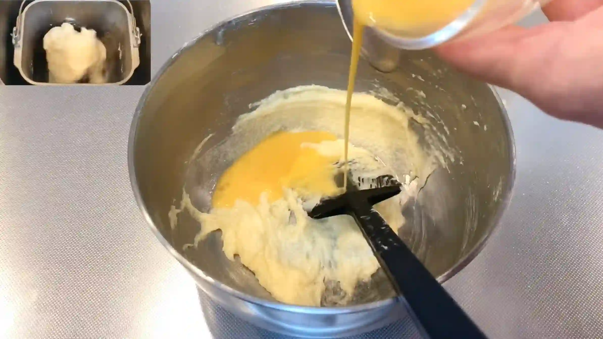
STEP 3
バニラエッセンスとアーモンドプードルを混ぜる
バニラエッセンスで香りを加え、アーモンドプードルを加えて全体を均一に混ぜ合わせます。アーモンドプードルがバターと卵の水分を吸収することで、パンに塗りやすいクリーム状になります。粉っぽさやダマが残らないよう、全体が均一になるまで混ぜます。
バニラエッセンスで香りを加え、アーモンドプードルを加えて全体を均一に混ぜ合わせます。アーモンドプードルがバターと卵の水分を吸収することで、パンに塗りやすいクリーム状になります。粉っぽさやダマが残らないよう、全体が均一になるまで混ぜます。
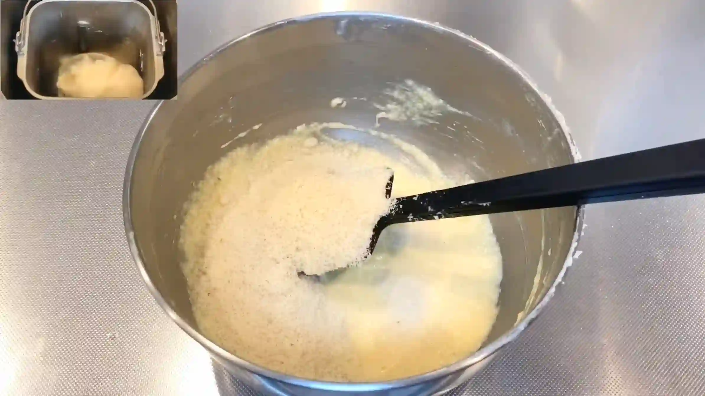
STEP 4
クリームを冷蔵する
冷蔵庫で冷やすことでバターが締まり、フィリングが適度に固くなります。生地に塗るときにやわらかすぎるとフィリングが流れたり、生地からはみ出したりしやすいため、冷やして扱いやすい状態に整えておきます。冷えすぎて硬くなった場合は、使用前に少し室温に置いて、塗り広げられる硬さに戻します。
冷蔵庫で冷やすことでバターが締まり、フィリングが適度に固くなります。生地に塗るときにやわらかすぎるとフィリングが流れたり、生地からはみ出したりしやすいため、冷やして扱いやすい状態に整えておきます。冷えすぎて硬くなった場合は、使用前に少し室温に置いて、塗り広げられる硬さに戻します。
動画でチェック
おいしく作るためのワンポイントコラム
『生地をねじって成形し、マフィン型に入れて焼けば、大体おしゃれになる』。簡単なのに見た目がパッと華やかに焼き上がる『アーモンドクリームパン』です。
気楽に挑戦できる楽しいレシピで、より美味しく、そして綺麗な模様に仕上げるための大切なポイントを3つにまとめました。
① クリームのコツ
中のフィリングは、バター、砂糖、卵、アーモンドプードルを同量ずつ混ぜ合わせた本格的なアーモンドクリーム。お好みでバニラエッセンスを加えれば、まるで焼き菓子店のような甘く香ばしい香りに包まれる極上のパンになります。とはいえ、常備されてる方はそう多くないと思いますので、わざわざ買わなくても全然問題ありません！入れなくても、とっても美味しいクリームに仕上がります。
② 綺麗な模様のコツ
大きく広げた生地にクリームを塗って三つ折りにするのですが、リッチな素材が重なるため生地がベタついて扱いが難しくなります。ここで、無理に成形作業に進もうとせず、生地を30分ほど冷凍するのがポイント。一度しっかり冷やすことでクリームが落ち着き、その後のカットや成形がスムーズになります。
③ 成形のコツ
縦長に切り分けた生地を2本合わせてねじり、くるっと巻いてマフィン型に入れる。このレシピ最大のポイントが、この成形です。型が生地の広がりをキュッと押さえてくれるおかげで、多少不恰好な形になっても大体おしゃれで綺麗な焼き上がりになります。また、マフィン型で焼くことで中にゆっくりと火が入り、ふんわりしっとり食感のパンになります。
ねじり方がうまくいかなかったり、クリームがちょっとはみ出したりすることもありますが、そんな失敗は全てマフィン型が受け止めてくれます！簡単で美味しいおしゃれパン、素敵ですよね。
気楽に挑戦できる楽しいレシピで、より美味しく、そして綺麗な模様に仕上げるための大切なポイントを3つにまとめました。
① クリームのコツ
中のフィリングは、バター、砂糖、卵、アーモンドプードルを同量ずつ混ぜ合わせた本格的なアーモンドクリーム。お好みでバニラエッセンスを加えれば、まるで焼き菓子店のような甘く香ばしい香りに包まれる極上のパンになります。とはいえ、常備されてる方はそう多くないと思いますので、わざわざ買わなくても全然問題ありません！入れなくても、とっても美味しいクリームに仕上がります。
② 綺麗な模様のコツ
大きく広げた生地にクリームを塗って三つ折りにするのですが、リッチな素材が重なるため生地がベタついて扱いが難しくなります。ここで、無理に成形作業に進もうとせず、生地を30分ほど冷凍するのがポイント。一度しっかり冷やすことでクリームが落ち着き、その後のカットや成形がスムーズになります。
③ 成形のコツ
縦長に切り分けた生地を2本合わせてねじり、くるっと巻いてマフィン型に入れる。このレシピ最大のポイントが、この成形です。型が生地の広がりをキュッと押さえてくれるおかげで、多少不恰好な形になっても大体おしゃれで綺麗な焼き上がりになります。また、マフィン型で焼くことで中にゆっくりと火が入り、ふんわりしっとり食感のパンになります。
ねじり方がうまくいかなかったり、クリームがちょっとはみ出したりすることもありますが、そんな失敗は全てマフィン型が受け止めてくれます！簡単で美味しいおしゃれパン、素敵ですよね。


今回は『アーモンドクリームパン』のレシピをご紹介します！リッチなクリームを巻き込み、まるでお店のようなビジュアルに焼き上げるレシピです。
コラムでは「クリームのコツ」「綺麗な模様のコツ」「成形のコツ」の3つのポイントをご紹介します。